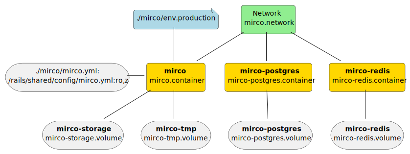

Podman with systemd: Quadlets
Requirements
-
podman Version >= 4.4, better 4.6 or higher.
If something doesn’t work have a look at https://docs.podman.io/en/stable/markdown/podman-systemd.unit.5.html and select your podman version (right bottom corner).
| Distro | Version | usable? |
|---|---|---|
Fedora 38 |
4.7.2 |
ok |
Fedora 39 |
4.8.1 |
ok |
Ubuntu 23.10 |
4.3.1 |
doesn’t work |
Ubuntu 24.04 |
4.7.2 |
ok |
Overview

Rootless setup: directories and files
/etc/containers/systemd/users/1000 ├── mirco │ ├── env.production │ └── mirco.yml ├── mirco.container ├── mirco.network ├── mirco-postgres.container ├── mirco-postgres.volume ├── mirco-redis.container ├── mirco-redis.volume └── mirco-storage.volume